Everything comes from this book.1
1.1. Expansion of the Universe. Most of my current knowledge of physics comes from the two courses I took during my U1 fall semester: PHYS 260 - Modern Physics, and PHYS 251 Honours Classical Mechanics. I will most likely tend to relate the material seen in this book to the material I have seen in class.
Firstly, the relativisitc doppler effect formula for a receding source:
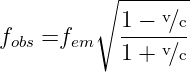
Which means that the frequency perceive by the observer from a receding source is lower, which means that the wavelength is longer, which, consequently, means that the light is red shifted. The standard terminology for redshift is:
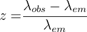
lobs --lem- z = l em " class="math-display" >where lemand lobs are the wavelengths of light at the points of emission. If a nearby object is receding at speed v, then its redshift is:
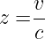
Theorem. The velocity of recession is proportional to the distance of the object.
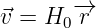
®r " class="math-display" >This is known as Hubble’s law, and the constant of proportionality H0, which is known as the Hubble’s constant.
This does not violate the Cosmological Principle since every observer sees all object receing away from them with velocity proportional to distance.
Definition. The Cosmological Principle: The Universe looks the same at each point (homogenous) and the Universe looks the same in all directions (isotropy).
Because everything is moving away from everything else, we can possibly retrace that in the distance past, everything originated from a state where everything was much closer to each other. This is known as the Big Bang Cosmology.
1.2. Particles in the Universe.
Definition. Total Energy of a particle:
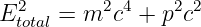
where m is the particle’s rest mass, and p the particle’s momentum. As mass is smaller, the particle moves more relativistically.
Some particles in our Universe:
Baryons:
Electrons, Protons and Neutrons. The Universe is charge neutral so there is one electron for every proton. Also too heavy to be moving at relativistic speeds
Radiation:
Photons g, no mass with E = hf. Can knock out an electron from an atom, or can scatter off a free electron (Thomson scattering, or Compton Scattering when hf ® mec2.
Neutrinos:
extremely weakly interacting particles, produced, for example, in radioactive decay. May posses non zero rest mass but treated as massless, so always relativistic. Three types of neutrino, the electron neutrino, muon neutrino and tau neutrino.
Dark matter:
we don’t know what this is
2.1. Cheating, because I don’t know GR. Some equations are the same, and it’s possible to cheat our way to them without passing by GR. This is the case with the Friedmann equation.
We start with two important equations and a theorem:
Theorem 1. From Classical Mechanics! Thanks Professor Cline! The force inside a spherical shell is 0. The only relevant material is the mass inside a concentric sphere through P.
The Friedmann equation describes the expansion of the Universe.
Consider an observer in a univerform expanding medium, with mass density r (mass per unit volume). We can consider any point to be it’s centre. A particle with mass m with a distance r compared to the observer, will only feel a force from the mass within a radius r (1). With the material having total mass M =
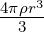
prr3- 3" class="frac" align="middle">, it will contribute a force: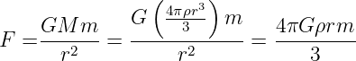
prr3) GM--m-- G-----3---m- 4pG-rrm-- F = r2 = r2 = 3 " class="math-display" >With gravitational potential energy
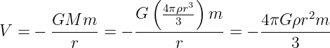
prr3- GM--m-- G-----3---m- 4pG--rr2m- V = - r = - r = - 3 " class="math-display" >It’s kinetic energy is given by
| T = | 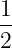 mṙ2 |
With the total energy U given by:
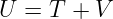
with U being a constant. Therefore
| (2.3) |
This equation gives the evolution of the separation r between the two particles.
We can change to comoving coordiantes, which describes comoving distarnce, which factors out the expansion of the Universe, giving a distance that does not change with time due to the expansion of space. The real distance, corresponding to distance at a specific cosmological time can change over time due to the expansion of the universe.
| (2.4) |
a(t) is the scale factor of the Universe. It measures the universal expansion rate. It is a function of time alone due to the Cosmological Principle.
Substituting equation (2.3), with ẋ = 0, as objects are fixed in the comoving coordinates gives:
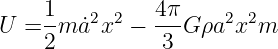
pG ra2x2m 2 3 " class="math-display" >Remember that ṙ = ȧx + ẋa = ȧx from the chain rule
so ṙ2 = ȧ2x2
Multiplying each side by
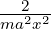
and rearranging the terms then gives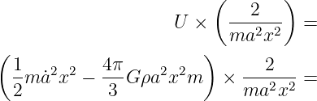
´ ma2x2-- = ( ) 1- 2 2 4p- 2 2 ---2--- 2m a˙ x - 3 G ra x m ´ ma2x2 = " class="math-display" >:
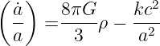
pG-- kc2- a = 3 r - a2 " class="math-display" >1 Liddle, Andrew. An Introduction to Modern Cosmology, 3rd Edition. John Wiley & Sons, 2015.